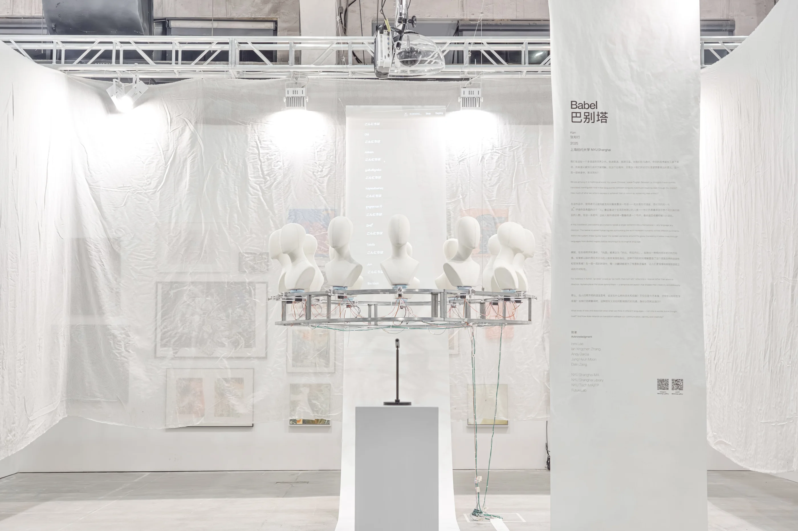
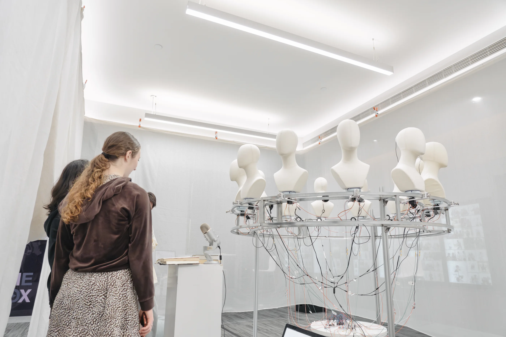
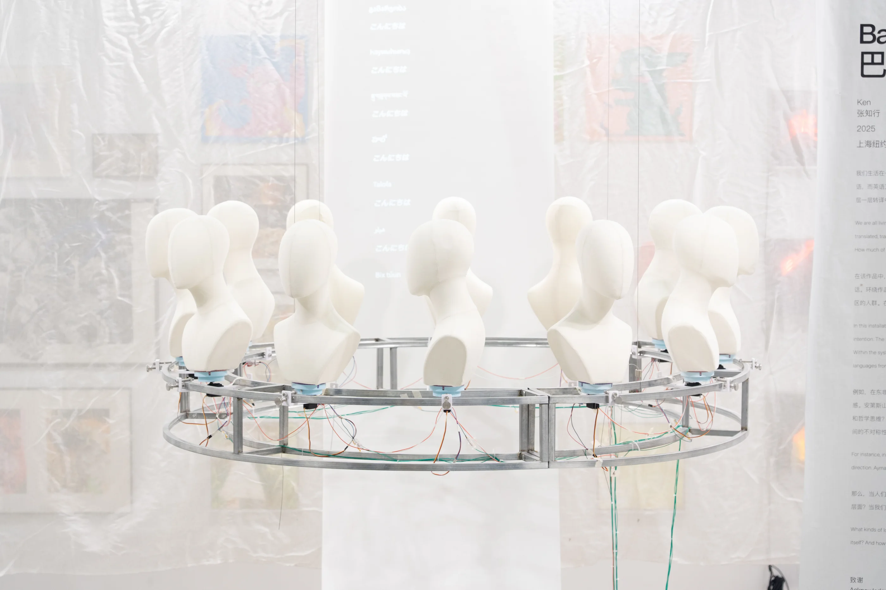
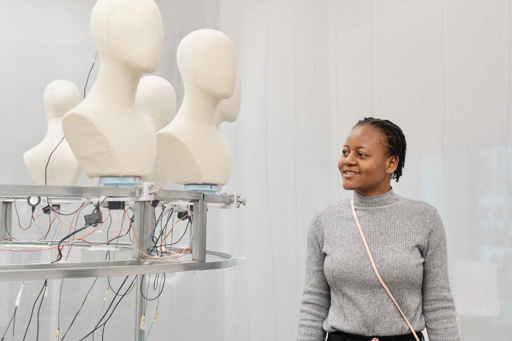
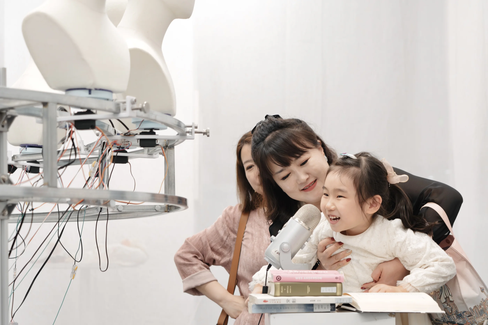
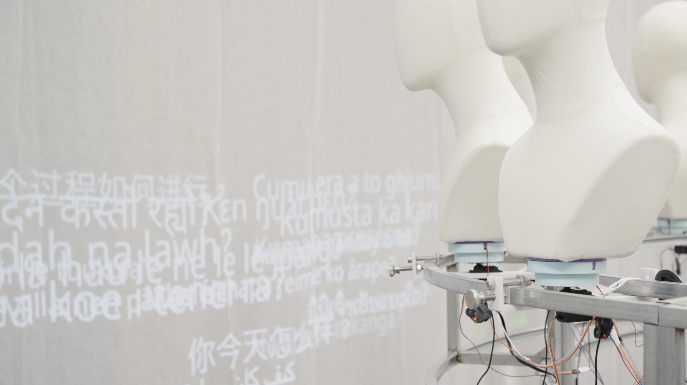
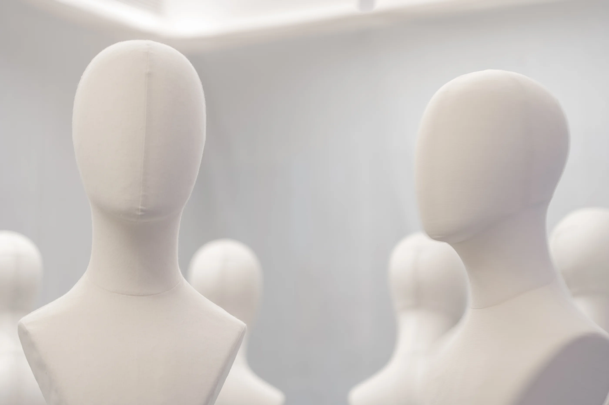
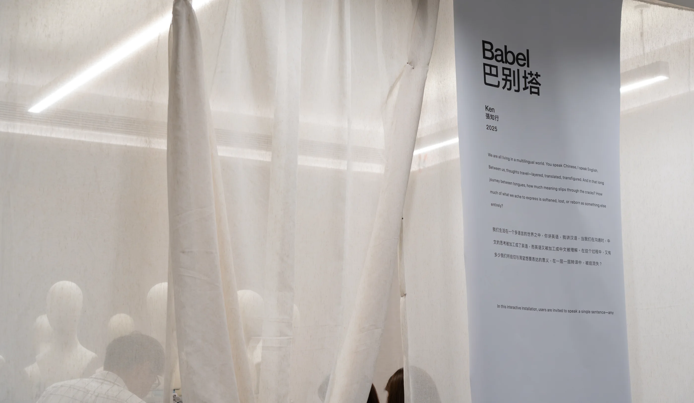
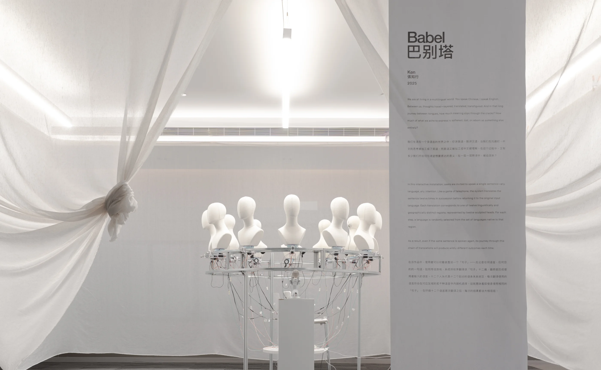

BABEL









BABEL
“On n’habite pas un pays, on habite une langue. ”
Emil Michel Cioran
We are all living in a multilingual world. You speak English, I speak Chinese, they speak Spanish. How much of the meaning we yearn to express was lost in the process of language conversion?
When people think in different languages, what is lost in translation cognitively and philosophically? How does this loss shape connection, identity, and creativity?
BABEL visualizes these linguistic and cultural gaps. I created an interactive translation installation in which a sentence is translated sequentially through multiple languages and back to its input language. By tracing this process, the work reveals how language structures thought and how translation is never neutral.
“There is no good or bad in the world; it is how we think.”
Input“The world has a different way of thinking that is neither right nor wrong.”
OutputMAP